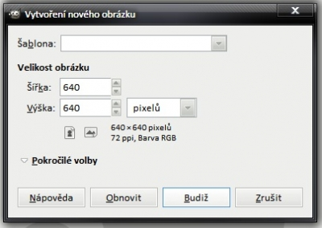
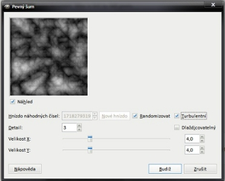
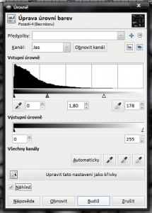
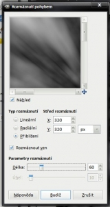
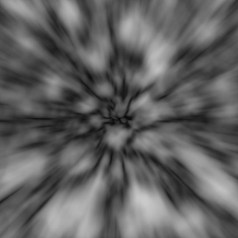
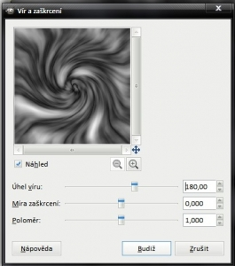
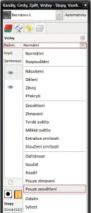
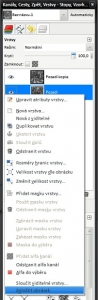
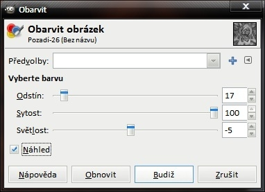
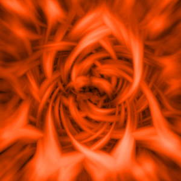

Web je již jen v režimu pro čtení a není možné přidávat nové komentáře nebo dotazy do fóra. Díky za přízeň.
Main menu
You are here
Abstraktní vlnový efekt
24. February 2012 - 13:59 — nicefox1
- Vytvoříme si obrázek s rozměry čtverce. Můj má 640x640, takže se od toho bude odvíjet zbytek..
 - Použijeme Filtry→Vykreslení→Mraky→Pevný šum, dáme Randomizovat, Turbulentní a zvýšíme detail na 3 nebo 4
 - Nyní použijeme Filtry→Vykreslení→Mraky→Odečíst Mraky a hodnoty necháme stejné, neboť by měly být stejné
- Jako další si to trochu upravíme s Barvy→Úrovně, u Vstupní úrovně posuneme ukazatel někde kolem 180 a šedý potom posuneme na 1,80.. Cílem je zesílit bílou, a zároveň nezrušit černou s šedou
 - Teď to potřebujeme rozmazat, takže si dáme Filtry→Rozostření→Rozmáznutí pohybem
Jako typ vybereme Přiblížení a délku na 60
toto nám vzniklo
 - Už to je skoro hotové, takže teď dáme Filtry→Zkreslení→Vír a zaškrcení a úhel víru dáme na 180
- Duplikujeme vrstvu a klikneme na náš duplikát (označíme si ho pro práci)
- Znovu dáme Filtry→Zkreslení→Vír a zaškrcení, ale tentokrát nastavíme hodnotu na -360 (180 vrátí na nulu a použije -180)
 - nastavíme režim horní vrstvy na "Pouze zesvětlení"
 - Zploštíme obrázek
 - Nyní si ho obarvíme s Barvy→Obarvit.. s hodnotama si nyní mužeš experimentovat různě, ale můj má následující
 - A výsledek.. tadá, povedlo se :)

{kind=link}
{kind=link}
{kind=link}
{kind=link}
{kind=link}
{kind=link}
{kind=link}
{kind=link}
{kind=link}
{kind=link}
Video
Kategorie:
Web je již ukončen. Nebude zde přibývat žádný nový obsah. Případné dotazy prosím na l.bacovsky(a)outlook.cz
Comments
Re: Abstraktní vlnový efekt
Re: Abstraktní vlnový efekt
Re: Abstraktní vlnový efekt
Re: Abstraktní vlnový efekt
Re: Abstraktní vlnový efekt
Re: Abstraktní vlnový efekt
Add new comment